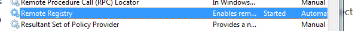
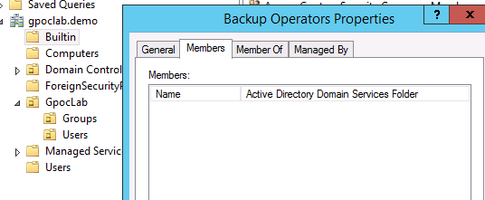
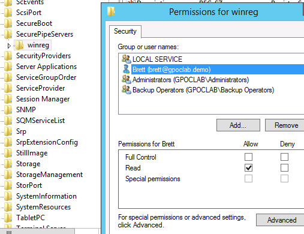

Summary: This shows you how to audit a remote registry without being an administrator on the target host.
Issue: Can't audit a remote registry without being an administrator on the target host.
Instructions: It is possible to audit a remote registry on a target host (even a domain controller) without being an administrator of the target.
There are two things that will need to be set:
Step 1: Remote registry needs to be enabled on the target host

Step 2: One of two security parameters need to be set
-
-
The account being leveraged needs to be a member of the Backup Operators group on the target host, or, in the case of a domain controller, the ID would need to be added the built-in\backup operators group for the domain.
 -
If the client does not want to elevate the ID to backup operators, the ID would have to be given read access to this target host registry hive location directly: HKLM\SYSTEM\CurrentControlSet\Control\SecurePipeServers\ winreg

-
Once these two requirements are met, StealthAUDIT can audit any registry hive that is open to Authenticated Users.
Product:
StealthAUDIT
Module: SA
- DC - Registry
Versions:
SA 6.3+